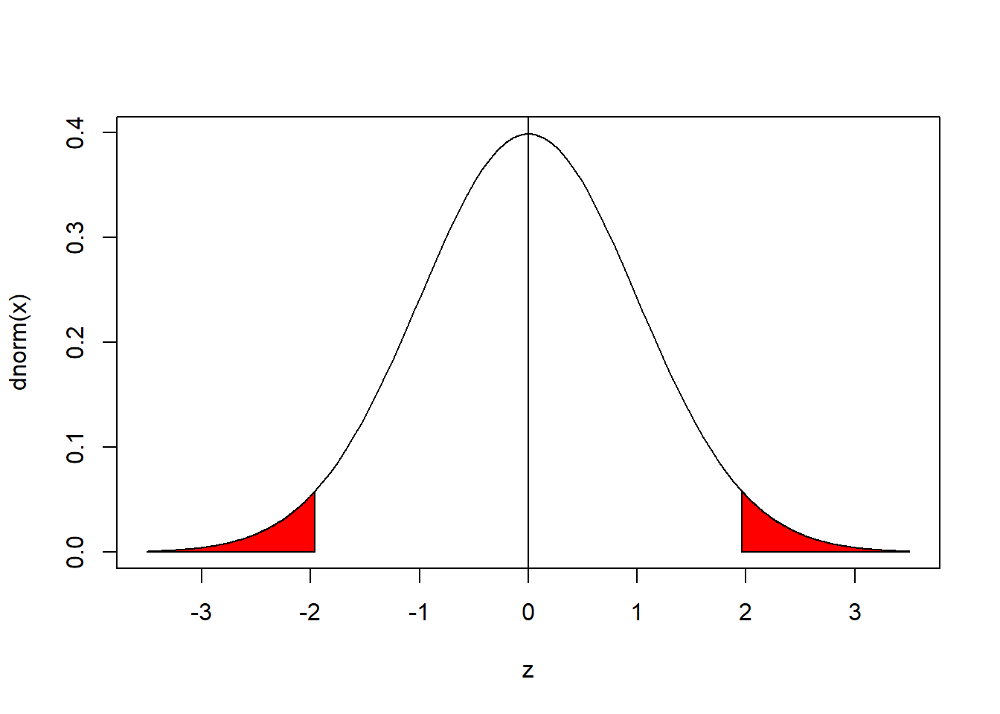
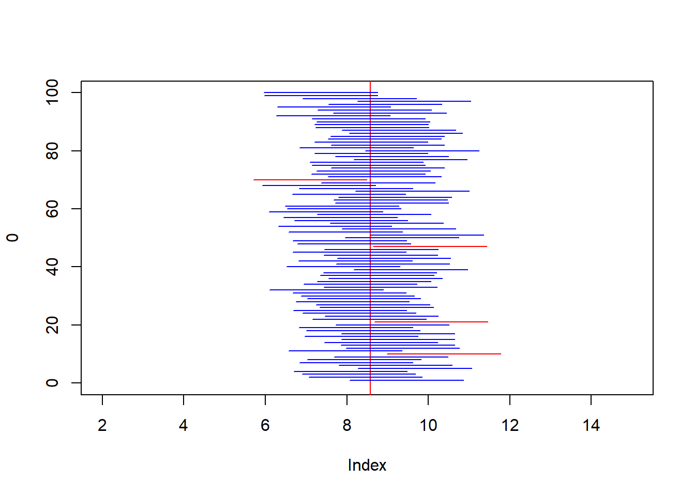
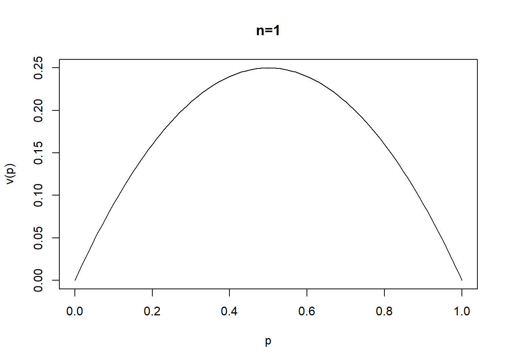
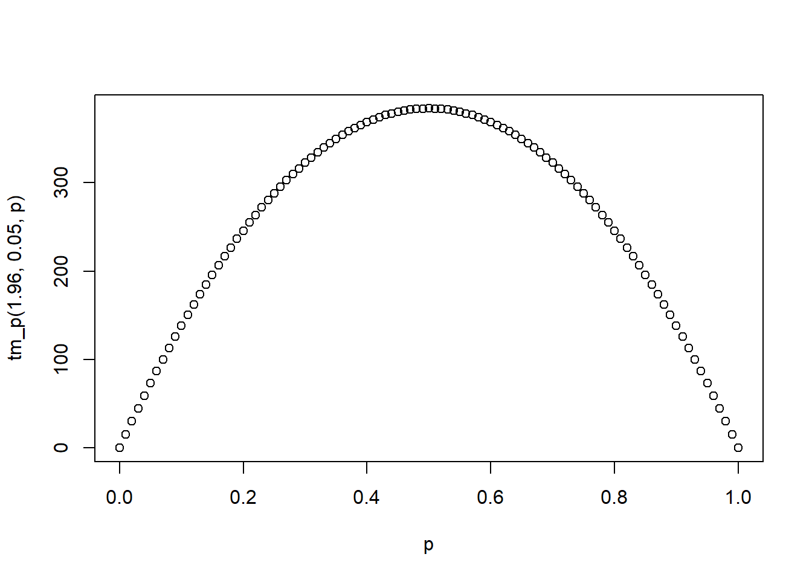

3 Estimaciones
3.1 Inferencia estadística
El proceso por el cual, mediante una muestra estadísticamente seleccionada se busca describir a la población/universo de la cual esta proviene. Podemos clasificar a la inferencia estadística en:
- Inferencia descriptiva: Tiene el único objetivo de describir a la población mediante la muestra, tradicionalmente se enfoca en estimaciones comunes como; la media, la varianza, total, un porcentaje, diferencia de medias, diferencia de proporciones.
- Estimación puntual:
\[\hat{\theta}\] + Estimación por intervalos:
\[[ \hat{\theta}_{LI},\hat{\theta}_{LS}]\]
- Pruebas de hipótesis:
\[\theta=k, \theta>k, \theta<k\] + Tamaño de la muestra (\(n\)):
\[n=f(U,V(\hat{\theta}),\hat{\theta},\ldots)\]
- Inferencia predictiva: Tiene una idea de estudiar; por un lado, la evolución de las estimaciones y sus posibles valores futuros (series de tiempo), por otro lado, le interesa conocer las relaciones (no causales) entre las variables.
- Series de tiempo
- Modelos lineales
- Técnicas multivariantes
- etc.
- Inferencia causal: Tiene el objetivo de medir la relación causal entre variables. \(X \rightarrow Y\)
- Diseños experimentales
- Diseños cuasi-experimentales
- Modelos estructurales
- Etc.
- Inferencia bayesiana
3.2 Estimadores puntuales
Recordemos que tenemos un universo \(U\) de tamaño \(N\).
\[U=\{u_1, u_2,\ldots,u_N\}\] Donde cada unidad del universo tiene variables (características) asociadas, pensemos en \(p\) características.
\[u_i=\{X_{i1},X_{i2}, \ldots , X_{ip}\}\] Un parámetro es una función sobre el universo y sus variables, lo denotamos por \(\theta\)
\[\theta=f(U,X)\] Un estimador se construye a partir de la definición de una estadística (\(\Theta\)) y tiene el objetivo de aproximar de la mejor forma a un parámetro.
\[\hat{\theta}\rightarrow \theta\]
El estimador \(\hat{\theta}\) se construye a partir de una muestra aleatoria (\(s\)) de tamaño \(n\) obtenida de \(U\).
\[\hat{\theta}=f(s(n),X)\]
Nota:
Para un parámetro \(\theta\), pueden existir muchos estimadores candidatos:
\[\hat{\Theta}=\{\hat{\theta}_1,\hat{\theta}_2, \hat{\theta}_3,...\}\rightarrow \theta\]
la pregunta es ¿Cuál es mejor?. Existen al menos dos criterios:
3.2.1 Estimador insesgado
\[E[\hat{\theta}]=\theta\]
Nota: Un ejemplo de un estimador sesgado es el de la razón.
\[R_{y/x}=\frac{t_y}{t_x}=\frac{\mu_y}{\mu_x}\]
\[\hat{R}_{y/x}=\frac{\hat{t}_y}{\hat{t}_x}=\frac{\bar{y}}{\bar{x}}\]
\[E[\hat{R}_{y/x}]=E\left[\frac{\hat{t}_y}{\hat{t}_x}\right]=E\left[\frac{\bar{y}}{\bar{x}}\right] \neq \frac{t_y}{t_x}\]
3.2.2 Estimador eficiente
Supongamos que tenemos dos estimadores para \(\theta\), \(\hat{\theta}_1\), \(\hat{\theta}_2\), el estimador más eficiente entre los dos será quien tenga el valor más pequeño en su varianza.
\[min(V(\hat{\theta_1}),V(\hat{\theta_2})) \rightarrow \hat{\theta}\]
Ejemplo.
Sea el vector \(X=\{10,10,20,25,30\}\) de una población con \(N=5\), se define una muestra de \(n=3\) y se busca estimar la media de \(X\): \(\mu_x\).
A partir de los estimadores de la media y la mediana muestral. Determinar:
- Son estimadores insesgados
- Cuál estimador es más eficiente
Suponga un muestreo sin reposición.
Solución.
N<-5
x<-c(10,10,20,25,30)
x## [1] 10 10 20 25 30mean(x)#parámetro## [1] 19n<-3#muestra
choose(5,3)## [1] 10s<-combn(x,3)
s## [,1] [,2] [,3] [,4] [,5] [,6] [,7] [,8] [,9]
## [1,] 10 10 10 10 10 10 10 10 10
## [2,] 10 10 10 20 20 25 20 20 25
## [3,] 20 25 30 25 30 30 25 30 30
## [,10]
## [1,] 20
## [2,] 25
## [3,] 30#distribución muestral de la media muestral
dmedia<-apply(s,2,mean)
dmedia## [1] 13.33333 15.00000 16.66667 18.33333 20.00000
## [6] 21.66667 18.33333 20.00000 21.66667 25.00000#distribución muestral de la mediana muestral
dmediana<-apply(s,2,median)
dmediana## [1] 10 10 10 20 20 25 20 20 25 25# Son estimadores insesgados
#media
sum(dmedia*(1/10)) # E[]## [1] 19mean(dmedia)## [1] 19#media
sum(dmediana*(1/10)) # E[]## [1] 18.5mean(dmediana)## [1] 18.5#parámetro media poblacional
mean(x)## [1] 19# Cuál estimador es más eficiente
sum((dmedia-mean(dmedia))^2*1/10) # media muestral## [1] 10.66667sum((dmediana-mean(dmediana))^2*1/10) # mediana muestral## [1] 35.25Para este ejercicio, la media muestral es insesgado y más eficiente que la mediana muestral, como un estimador de la media poblacional.
Nota
Los principales problemas de estimación ocurren con frecuencia para estimar:
- El promedio o media de una población \(\mu\)
\[\mu_X=\frac{\sum_U X_i}{N}\]
- La varianza poblacional \(\sigma^2\)
\[\sigma^2=\frac{\sum_U (X_i-\mu_X)^2}{N}\]
- La proporción de una característica en la población \(P\)
\[P_A=\frac{\#A}{N}=\frac{\sum_{U} X_i}{N}; \quad \{X_i=1, \quad i \in A, X_i=0,\quad eoc\}\]
- La diferencia de medias de dos poblaciones
\[\mu_1-\mu_2\]
- La diferencia de proporciones de dos poblaciones
\[P_1-P_2\] - El cociente de varianzas de dos poblaciones
\[\sigma_1/\sigma_2\]
Estimaciones puntuales razonables de estos parámetros son las siguientes:
- Para \(\mu_x\), la estimación es la media muestral: \(\hat{\mu_x}=\bar{X}\)
\[\bar{x}=\frac{\sum_s X_i}{n}\] - Para \(\sigma^2\), la estimación es la varianza muestral \(S^2\),
\[S^2=\frac{\sum_s (X_i-\bar{X})^2}{n-1}\]
- Para \(P\), la estimación es \(\hat{P}\), la proporción muestral
\[\hat{P}_A=\frac{\#_sA}{n}=\frac{\sum_{s} X_i}{n}; \quad \{X_i=1, \quad i \in A, X_i=0,\quad eoc\}\] - Para \(\mu_1-\mu_2\), la diferencia entre las medias de las muestras de dos muestras aleatorias independientes.
\[\hat{\mu_1}-\hat{\mu}_2=\bar{X}_1-\bar{X}_2\] - Para \(P_1-P_2\), la diferencia entre las proporciones de las muestras de dos muestras aleatorias independientes.
\[\hat{P_1}-\hat{P}_2\] - Para el cociente de varianzas \(\sigma_1/\sigma_2\) un estimador razonables es:
\[\hat{S}_1/\hat{S}_2\]
Ejemplo,
Suponga que \(X\) es una variable aleatoria con media \(\mu_x\) y varianza \(\sigma^2_x\). Sea \(X_1, X_2, \ldots, X_n\) una muestra aleatoria de tamaño \(n\) de \(X\).
DEMOSTRAR que la media muestral \(\bar{X}\) y la varianza muestral \(S^2\) son estimadores insesgados de \(\mu_x\) y \(\sigma^2_x\), respectivamente.
Como información; \(E[X]=\mu\),
\[V(X)=\sigma^2=E[X^2]-E[X]^2\].
Solución,
\[E[\bar{X}]=E\left[\frac{\sum_s X_i}{n} \right]=\frac{1}{n}\left(\sum_s E[X_i]\right)=\frac{1}{n}\left(\sum_{i=1}^n \mu\right)=\mu \] Así,
\[V(\bar{X})=\frac{\sigma^2}{n}=E[\bar{X}^2]-E[\bar{X}]^2=E[\bar{X}^2]-\mu^2\]
\[E[S^2]=E\left[\frac{\sum_s (X_i-\bar{X})^2}{n-1} \right]=\frac{1}{n-1} E\left[\sum_s (X_i^2-2X_i \bar{X}+\bar{X}^2) \right]=\]
\[=\frac{1}{n-1}E\left[\sum_s X_i^2-2\bar{X} \sum_sX_i +n\bar{X}^2 \right]= \]
\[=\frac{1}{n-1}E\left[\sum_s X_i^2-2\bar{X}n\frac{\sum_s X_i}{n} +n\bar{X}^2 \right]=\] \[=\frac{1}{n-1}E\left[\sum_s X_i^2-2n\bar{X}^2 +n\bar{X}^2 \right]=\frac{1}{n-1}E\left[\sum_s X_i^2-n\bar{X}^2\right]=\]
\[=\frac{1}{n-1}\left(\sum_s E[X_i^2]-nE[\bar{X}^2] \right)= \alpha\] Notar
\(\sigma^2=E[X^2]-E[X]^2=E[X^2]-\mu^2\) para un \(X_i\), \(\sigma^2=E[X_i^2]-E[X_i]^2=E[X_i^2]-\mu^2\), entonces, \(E[X_i^2]=\sigma^2+\mu^2\). Por otro lado \(E[\bar{X}^2]=\frac{\sigma^2}{n}+\mu^2\), Así:
\[\alpha=\frac{1}{n-1}\left[\sum_s (\sigma^2+\mu^2) -n \left(\frac{\sigma^2}{n}+\mu^2 \right) \right]=\] \[=\frac{1}{n-1}\left[ n \sigma^2+n\mu^2 -\sigma^2-n\mu^2 \right]=\frac{\sigma^2(n-1)}{n-1}=\sigma^2\]
3.2.3 Error cuadrático medio (ECM)
Este se define para un estimador como:
\[ECM(\hat{\theta})=E\left[(\hat{\theta}-\theta)^2\right]\]
Recordar que
\[V(\hat{\theta})=E\left[(\hat{\theta}-E[\hat{\theta}])^2\right]\]
\[ECM(\hat{\theta})=E\left[\left[(\hat{\theta}-E[\hat{\theta}])-(\theta-E[\hat\theta]) \right]^2\right]=E\left[(\hat{\theta}-E[\hat{\theta}])^2-2(\hat{\theta}-E[\hat{\theta}])(\theta-E[\hat\theta])+ (\theta-E[\hat\theta])^2 \right]=\]
\[=E[(\hat{\theta}-E[\hat{\theta}])^2]-2(\theta-E[\hat\theta])E\left[\hat{\theta}-E[\hat{\theta}]\right]+E[(\theta-E[\hat\theta])^2]=V(\hat\theta)=V(\hat{\theta})+E[(\theta-E[\hat\theta])^2]=\]
\[=V(\hat{\theta})+sesgo(\hat\theta)^2\]
3.2.4 Cota de Cramer Rao
Es posible obtener una cota inferior de la varianza de todos los estimadores (\(\hat{\theta}_1, \hat{\theta}_2,\ldots\)) insesgados de \(\theta\). Sea \(\hat{\theta}\) un estimador insesgado del parámetro \(\theta\), basado en una muestra aleatoria de \(n\) observaciones, y considérese que \(f(x,\theta)\) denota la función de distribución de probabilidades de una variable aleatoria \(X\). Entonces una cota inferior en la varianza de \(\hat{\theta}\) es:
\[V(\hat{\theta})\geq\frac{1}{nE\left\{ \left[\frac{d}{d\theta }ln f(X,\theta) \right]^2 \right\}}\]
Esta desigualdad se denomina cota de Cramer Rao. Si un estimador insesgado \(\hat{\theta}\) satisface la desigualdad, se tratará del estimador insesgado de varianza mínima de \(\theta\).
Ejemplo,
Demostrar que la media muestral \(\bar{x}\) es el estimador insesgado de varianza mínima de la media de una distribución normal con varianza conocida.
Sea \(X\sim N(\mu,\sigma^2)\), sabemos \(E[\bar{x}]=\mu\)
\[f(X,\mu)=\frac{1}{\sqrt{2\pi} \sigma}e^{-\frac{1}{2}\left(\frac{X-\mu}{\sigma}\right)^2}\] \[ln f(X,\mu)=ln\left( \frac{1}{\sqrt{2\pi} \sigma}e^{-\frac{1}{2}\left(\frac{X-\mu}{\sigma}\right)^2} \right)=-ln\left( \sqrt{2\pi} \sigma \right) -\frac{1}{2}\left(\frac{X-\mu}{\sigma}\right)^2\]
\[E\left\{\left[ \frac{d}{d\mu} ln f(X,\mu)\right]^2 \right\}=E\left\{ \left[ \frac{(X-\mu)}{\sigma^2} \right]^2\right\} =E\left[\frac{(X-\mu)^2}{\sigma^4} \right]=\frac{E[(X-\mu)^2]}{\sigma^4}=\] \[=\frac{\sigma^2}{\sigma^4}=\frac{1}{\sigma^2}\]
Finalmente, para la cota de Cramer-Rao
\[V(\bar{x})\geq \frac{1}{\frac{n}{\sigma^2}}=\frac{\sigma^2}{n}=V(\bar{x})\]
Tarea: - Para la varianza muestral \(S^2\), encontrar la cota de cramer Rao, suponiendo media conocida y distribución normal. - Suponer que \(x\sim exp(\lambda)\), si el objetivo es estimar \(\lambda\) encontrar la cota de cramer Rao para \(\lambda\).
3.2.5 Método de máxima verosimilitud
Suponga que \(X\) es una va, con distribución \(f(X,\theta)\), donde \(\theta\) es un parámetro desconocido. Sean \(X_1, X_2,\ldots, X_n\) va. iid. como \(X\), la muestra de tamaño \(n\). La función de probabilidad de las \(n\) va. se escribe como:
\[f(X_1,X_2, \ldots,X_n,\theta)=f(X_1,\theta)*f(X_2,\theta)*\ldots*f(X_n,\theta)=L(\theta)\] El estimador de máxima verosimilitud de \(\theta\) es el valor que maximiza la función de probabilidad \(L(\theta)\).
Pasos para obtener el estimador de máxima verosimilitud para un parámetro \(\theta\)
- Obtener \(L(\theta)\)
- Calcular \(ln [L(\theta)]\)
- Resolver la ecuación:
\[\frac{d}{d\theta} ln [L(\theta)]=0\]
En el caso de que tengamos más de un parámetro, los pasos son:
- Obtener \(L(\theta_1,\theta_2,\ldots)=f(X_1,\theta_1,\theta_2,\ldots)*\ldots*f(X_n,\theta_1,\theta_2,\ldots)\)
- Calcular \(ln [L(\theta_1,\theta_2,\ldots)]\)
- Resolver el sistema de ecuaciones:
\[\frac{\partial }{\partial \theta_1} ln [L(\theta_1,\theta_2,\ldots)]=0\] \[\frac{\partial }{\partial \theta_2} ln [L(\theta_1,\theta_2,\ldots)]=0\] \[\vdots\]
\[\frac{\partial }{\partial \theta_p} ln [L(\theta_1,\theta_2,\ldots)]=0\]
Ejemplos
Para el caso discreto, sea \(x\) una variable aleatoria con función de probabilidad:
\[\pi(x)=P(X=x)=\theta (1-\theta)^{x-1}; \quad x=1,2,3,\ldots; \quad 0\leq\theta\leq1\] Encontrar al estimador de máxima verosimilitud de \(\theta\)
Solución,
Sea \(X_1, X_2, \ldots, X_n\) una muestra aleatoria, donde las \(X_i\) son iid. Así:
\[\pi(x_i)=P(X_i=x_i)=\theta (1-\theta)^{x_i-1}; \quad x_i=1,2,3,\ldots; \quad 0\leq\theta\leq1\]
\[L(\theta)=\prod_{i=1}^n \theta (1-\theta)^{x_i-1}=\theta^n (1-\theta)^{\sum_s x_i - n}\]
\[ln (L (\theta))=ln \left(\theta^n (1-\theta)^{\sum_s x_i - n} \right)=n ln (\theta)+\left(\sum_s x_i -n\right) ln(1-\theta)\]
\[\frac{d}{d \theta} ln(L(\theta))=\frac{n}{\theta}-\left(\sum_s x_i -n\right)\frac{1}{1-\theta}=0\]
\[\frac{n}{\theta}=\frac{\left(\sum_s x_i -n\right)}{1-\theta}\rightarrow n-n\theta=\theta \sum_s x_i-n\theta\] \[n=\theta \sum_s x_i\]
\[\hat{\theta}=\frac{n}{\sum_s x_i}=\frac{1}{\bar{x}}\]
Sea \(X\sim Bernoulli(p)\), la función de probabilidad es:
\[P(X=x)=\pi(x)=p^x (1-p)^{1-x} \quad ; x=\{0,1\}\]
Si \(p\) es el parámetro de interés que se busca estimar, ¿qué forma tendrá el estimador de máxima verosimilitud?
Solución,
Supongamos que se extrae una muestra de tamaño \(n\), así:
\[L(p)=f(X_1,p)*f(X_2,p)*\ldots*f(X_n,p)=p^{x_1} (1-p)^{1-x_1}*p^{x_2} (1-p)^{1-x_2}*\ldots*p^{x_n} (1-p)^{1-x_n}\]
\[L(p)=p^{\sum_{i=1}^n x_i}*(1-p)^{n-\sum_{i=1}^n x_i}\]
\[ln[ L(p)]= \sum_{i=1}^n x_i ln(p)+\left(n-\sum_{i=1}^n x_i \right) ln(1-p) \]
\[\frac{d}{dp}ln[ L(p)]= \frac{\sum_{i=1}^n x_i}{p}-\frac{\left(n-\sum_{i=1}^n x_i\right)}{1-p}=0\]
\[ \frac{\sum_{i=1}^n x_i}{p}-\frac{\left(n-\sum_{i=1}^n x_i\right)}{1-p}=0\]
\[\hat{p}_{mv}=\frac{\sum_{i=1}^n x_i}{n}\]
Ejemplo, Sea \(X_1, X_2, \ldots,X_n\), va iid, tal que \(X_i\sim Poisson(\lambda)\). Encontrar el estimador de \(\lambda\) empleando el método de máxima verosimilitud.
Solución, recordar que si \(X\sim Poisson(\lambda)\)
\[\pi(x)=P(X=x)=\frac{e^{-\lambda} \lambda ^x}{x!}; \quad X=\{0,1,2\ldots\}\]
\[L(\lambda)=\pi(X_1,\lambda)*\pi(X_2,\lambda)*\ldots*\pi(X_n,\lambda)\]
\[L(\lambda)=\frac{e^{-\lambda} \lambda ^{x_1}}{x_1!}*\frac{e^{-\lambda} \lambda ^{x_2}}{x_2!}*\ldots*\frac{e^{-\lambda} \lambda ^{x_n}}{x_n!}\]
\[L(\lambda)=\prod_{i=1}^n \frac{e^{-\lambda} \lambda ^{x_i}}{x_i!}=\frac{e^{-n\lambda}\lambda^{\sum_{i=1}^n x_i}}{\prod_{i=1}^n x_i!}\] \[ln [L(\lambda)]=-n\lambda+\sum_{i=1}^n x_i ln \lambda - ln \prod_{i=1}^n x_i!\] \[\frac{d}{d\lambda}ln [L(\lambda)]=-n+\frac{\sum_{i=1}^n x_i}{\lambda}=0\]
\[\hat{\lambda}=\frac{\sum_{i=1}^n x_i}{n}\]
Ejemplo, Sea \(X_1, X_2, \ldots,X_n\), va iid, tal que \(X_i\sim exp(\lambda)\). Encontrar el estimador de \(\lambda\) empleando el método de máxima verosimilitud.
Solución, recordar que si \(X\sim exp(\lambda)\) su función de densidad es dada por:
\[f(x)=\lambda e^{-\lambda x}; \quad x\geq0\]
\[L(\lambda)=\prod_{i=1}^n \lambda e^{-\lambda x_i}=\lambda^n e^{-\lambda \sum_{i=1}^n x_i}\] \[ln [L(\lambda)]=n ln \lambda-\lambda \sum_{i=1}^n x_i\] \[\frac{d}{d\lambda}ln [L(\lambda)]=\frac{n}{\lambda}-\sum_{i=1}^n x_i=0\] \[\hat{\lambda}=\frac{1}{\frac{\sum_{i=1}^n x_i}{n}}=\frac{1}{\bar{X}}\]
Ejemplo, Sea \(X_1, X_2, \ldots,X_n\), va iid, tal que \(X_i\sim N(\mu,\sigma^2)\) ambos parámetros desconocidos. Encontrar los estimadores de máxima verosimilitud para \(\mu\) y \(\sigma^2\).
Solución, recordar si \(X\sim N(\mu, \sigma^2)\) su función de densidad es dada por:
\[f(X)=\frac{1}{\left(2\pi \sigma^2 \right)^{1/2} }e^{-\frac{1}{2}\frac{\left(x-\mu\right)^2}{\sigma^2}}\] \[L(\mu,\sigma^2)=\prod_{i=1}^n \frac{1}{\left(2\pi \sigma^2 \right)^{1/2} }e^{-\frac{1}{2}\frac{\left(x_i-\mu\right)^2}{\sigma^2}}=\frac{1}{\left(2\pi \sigma^2 \right)^{n/2} }e^{-\frac{1}{2 \sigma^2}\sum_{i=1}^n \left(x_i-\mu\right)^2}\] \[ln[L(\mu,\sigma^2)]=-\frac{n}{2}ln (2\pi \sigma^2)-\frac{1}{2 \sigma^2}\sum_{i=1}^n \left(x_i-\mu\right)^2\] \[\frac{\partial}{\partial \mu} ln[L(\mu,\sigma^2)]=\frac{1}{\sigma^2} \sum_{i=1}^n \left(x_i-\mu\right)=0\]
\[\frac{\partial}{\partial \sigma^2} ln[L(\mu,\sigma^2)]=-\frac{n}{2 \sigma^2}+\frac{1}{2 \sigma^4}\sum_{i=1}^n \left(x_i-\mu\right)^2=0\] \[\sum_{i=1}^n x_i - n\mu=0\] \[\hat{\mu}=\frac{\sum_{i=1}^n x_i}{n}=\bar{X}\]
\[\hat{\sigma}^2=\frac{\sum_{i=1}^n \left(x_i-\bar{X}\right)^2}{n}\]
3.2.6 Método de momentos
Este método fue desarrollado por 1894 por Pearson, a diferencia del método de máxima verosimilitud que fue ampliamente utilizado por Fisher a partir 1912.
Recordar que para una variable aleatoria, los momentos respecto el origen son:
- Primer Momento: \(\mu_1=E[X]=\int x f(x) dx\)
- Segundo Momento: \(\mu_2=E[X^2]=\int x^2 f(x) dx\)
- k-ésimo momento: \(\mu_k=E[X^k]\)
Sea \(X_1, X_2, \ldots ,X_n\) una muestra aleatoria de tamaño \(n\) de una va \(X\), definamos los primeros \(k\) momentos de la muestra respecto al origen como:
- Primer momento:
\[m_1=\frac{\sum_{i=1}^n x_i}{n}\]
- Segundo momento:
\[m_2=\frac{\sum_{i=1}^n x^2_i}{n}\]
- k-ésimo momento:
\[m_k=\frac{\sum_{i=1}^n x^k_i}{n}; \quad k=1,2,\ldots \]
Los momentos \(\mu_k\) de la población serán funciones de los parámetros desconocidos \(\theta\). Al igualar estos momentos muestrales con los poblaciones vamos a poder construir un sistema de ecuaciones de cuantas incógnitas se defina con la distribución de \(X\)
\[\mu_1=E[x]=m_1=\frac{\sum_s x_i}{n}\] \[\mu_2=E[x^2]=m_2=\frac{\sum_s x_i^2}{n}\]
\[\mu_k=E[x^k]=m_k=\frac{\sum_s x_i^k}{n}\]
Ejemplo, Sea \(X_1, X_2, \ldots,X_n\), va iid, tal que \(X_i\sim exp(\lambda)\). Encontrar el estimador de \(\lambda\) empleando el método de momentos.
Solución, recordar que si \(X\sim exp(\lambda)\) su función de densidad es dada por:
\[f(x)=\lambda e^{-\lambda x}; \quad x\geq0\] \[E[X]=m_1\] \[E[X]=\int_0^\infty x\lambda e^{-\lambda x}dx=\frac{1}{\lambda}\]
Igualando los momentos:
\[\frac{1}{\lambda}=\frac{\sum_s x_i}{n}\]
\[\hat{\lambda}= \frac{1}{\frac{\sum_s x_i}{n}}=\frac{1}{\bar{X}}\]
Ejercicio, Sea \(X\) una va geométrica con parámetro \(p\), encuentre un estimador de \(p\) mediante el método de momentos y el método de máxima verosimilitud. En base a una muestra aleatoria de tamaño \(n\)
Recordar que si \(X\sim G(p)\), entonces su distribución de probabilidades es:
\[\pi(x)=P(X=x)=(1-p)^x p; \quad x=\{0,1,2,\dots\} \]
Recordar que \(E[X]=\frac{1-p}{p}\), por el método de momentos:
\[\frac{1-p}{p}=\bar{X}\]
\[\hat{p}=\frac{1}{\bar{X}+1}\] Por el método de máxima verosimilitud.
\[L(p)=\prod_{i=1}^n (1-p)^{x_i} p=(1-p)^{\sum_s x_i} p^n\] \[ln [L(p)]=\sum_s x_i ln (1-p)+n ln(p)\]
\[\frac{d}{dp}ln [L(p)]=-\frac{\sum_s x_i}{1-p}+\frac{n}{p}=0\] \[\hat{p}=\frac{1}{\bar{X}+1}\]
Ejercicio, Sea \(X\) una normal con parámetro \(\mu\), \(\sigma^2\), encuentre un estimador de \(\mu\) y \(\sigma^2\) mediante el método de momentos. En base a una muestra aleatoria de tamaño \(n\)
\[E[X]=m_1\rightarrow \mu=\bar{X}\] \[E[X^2]=m_2\rightarrow E[X^2]=\frac{\sum_s x_i^2}{n}\rightarrow (\alpha)\]
Recordar que:
\[\sigma^2=E[X^2]-E[X]^2=E[X^2]-\mu^2 \approx E[X^2]-\bar{X}^2\]
Para \((\alpha)\)
\[\sigma^2+\bar{X}^2=\frac{\sum_s x_i^2}{n}\rightarrow \hat{\sigma}^2=\frac{\sum_s x_i^2}{n}-\bar{X}^2\]
Tarea, sea \(X\) una va con función de densidad:
\[f(x)=\frac{2(\theta-x)}{\theta^2}; \quad 0\leq x\leq \theta; \quad \theta>0\]
- Verificar que es una función de densidad
- Encontrar el estimador de \(\theta\) por el método de momentos y máxima verosimilitud
- Verificar si el estimador por método de momentos y máxima verosimilitud es insesgado.
Solución
- Verificar que es una función de densidad
\[1=\int_{Rx} f(x)dx=\int_{0}^\theta \frac{2(\theta-x)}{\theta^2} dx=\frac{2}{\theta^2}(-1) \frac{(\theta-x)^2}{2}/_0^\theta\]
\[\frac{1}{\theta^2}(-1)\left(0^2-\theta^2 \right)=1 \]
- Encontrar el estimador de \(\theta\) por el método de momentos y máxima verosimilitud
Suponer que tenemos una muestra aleatoria de tamaño \(n\), con las va \(x_1,x_2,\ldots,x_n\) siente estas variables iid.
Para el método de momentos se requiere resolver:
\[E[X]=m_1; \quad E[X]=\bar{X}\] Se requiere calcular \(E[X]\)
\[E[X]=\int_{Rx}x f(x)dx=\int_0^\theta x \frac{2(\theta-x)}{\theta^2} dx=\frac{\theta}{3}\] Entonces,
\[\frac{\theta}{3}=\bar{X}\quad \rightarrow \hat{\theta}=3\bar{X}\]
Para el método de máxima verosimilitud, sabemos que:
\[f(x_i,\theta)=\frac{2(\theta-x_i)}{\theta^2}\]
\[L(\theta)=\prod_{i=1}^n \frac{2(\theta-x_i)}{\theta^2}=\frac{2^n}{\theta^{2n}}\prod_{i=1}^n\left( \theta - x_i\right) \]
\[ln(L(\theta))=ln\left[\frac{2^n}{\theta^{2n}}\prod_{i=1}^n\left( \theta - x_i\right)\right]=n ln (2)-2n ln(\theta)+ln (\prod_{i=1}^n\left( \theta - x_i\right))\]
\[=n ln (2)-2n ln(\theta)+\sum_{i=1}^n ln (\theta-x_i)\]
\[\frac{d ln(L(\theta))}{d\theta}=-\frac{2n}{\theta}+\sum_{i=1}^n \frac{1}{\theta-x_i}=0\] \[\sum_{i=1}^n \frac{1}{\theta-x_i}=\frac{2n}{\theta} \rightarrow\quad \sum_{i=1}^n \frac{\theta}{\theta-x_i}=\sum_{i=1}^n 2\rightarrow \frac{\theta}{\theta-x_i}=2\]
\[\theta=2x_i \rightarrow \sum_s \theta = 2 \sum_s x_i\] \[\hat{\theta}=2\bar{X}\]
- Verificar si el estimador por método de momentos y máxima verosimilitud es insesgado.
Para el método de momentos:
\[E[\hat{\theta}]=E[3\bar{X}]=3E\left[\frac{\sum_s x_i}{n}\right]=\frac{3}{n}\sum_s E[x_i]=\frac{3}{n}\sum_s \frac{\theta}{3}=\] \[=\frac{3n\theta}{n3}=\theta\]
Para el método de máxima verosimilitud
\[E[\hat{\theta}]=E[2\bar{X}]=2E\left[\frac{\sum_s x_i}{n}\right]=\frac{2}{n}\sum_s E[x_i]=\frac{2}{n}\sum_s \frac{\theta}{3}=\frac{2}{3}\theta\]
3.3 Estimación por intervalos de confianza
Para construir un intervalo de confianza del parámetro desconocido \(\theta\), se debe encontrar dos estadísticas \(L\) y \(U\) tales que:
\[P(L\leq\theta\leq U)=1-\alpha\]
El intervalo \(L\leq\theta\leq U\) se llama intervalo de confianza del \(100*(1-\alpha)\) (Porcentaje de confiabilidad del intervalo). A \(L\) se lo conoce como límite inferior y \(U\) como límite superior.
La interpretación del intervalo de confianza es que si se coleccionan muchas muestras aleatorias y se calcula un intervalo de confianza del \(100*(1-\alpha)\) por ciento en \(\theta\) de cada muestra, entonces \(100*(1-\alpha)\) por ciento de estos intervalos contendrán el verdadero valor de \(\theta\).
3.3.1 Intervalo de confianza para la media, asumiendo varianza conocida.
Sea \(X\) una va con media desconocida \(\mu\) y varianza conocida \(\sigma^2\). Suponga que se toma una muestra aleatoria de tamaño \(n\), \(X_1,X_2,\ldots,X_n\). Puede obtenerse un intervalo de confianza del \(100*(1-\alpha)\) por ciento en \(\mu\) considerando la distribución de muestreo de \(X\) de la media muestral \(\bar{x}\).
Por el teorema del límite central sabemos que:
\[\bar{x}\sim N\left(\mu,\frac{\sigma^2}{n}\right)\]
bajo ciertas condiciones (\(n>20\)). Así:
\[Z=\frac{\bar{x}-\mu}{\frac{\sigma}{\sqrt{n}}} \quad \rightarrow \quad Z\sim N(0,1)\]
Teniendo a \(Z\sim N(0,1)\), para armar el intervalo de confianza basta con trabajar sobre:
\[P(L\leq Z\leq U)=1-\alpha\]
Para un intervalo de confianza \(L \leq \theta \le U\) se debe asegurar que la precisión de los lados sea la misma, \(\theta-L=U-\theta\).
curve(dnorm(x),xlim=c(-3.5,3.5),xlab="z")
abline(v=0)
sx<-c(-3.5,seq(-3.5,qnorm(0.025),0.01),qnorm(0.025))
sy<-c(0,dnorm(seq(-3.5,qnorm(0.025),0.01)),0)
polygon(sx,sy,col="red")
polygon(-1*sx,sy,col="red")
#para encontrar los z_{alpha/2}
qnorm(0.1/2)#10%## [1] -1.644854qnorm(0.05/2)#5%## [1] -1.959964qnorm(0.01/2)#1%## [1] -2.575829#para encontrar los z_{1-alpha/2}
qnorm(1-0.1/2)#10%## [1] 1.644854qnorm(1-0.05/2)#5%## [1] 1.959964qnorm(1-0.01/2)#1%## [1] 2.575829Si \(\alpha=0.05\)
\[P(L\leq Z\leq U)=0.95\]
\[P(-Z_{\alpha/2}\leq Z\leq Z_{\alpha/2})=1-\alpha\]
\[P\left(-Z_{\alpha/2}\leq \frac{\bar{X}-\mu}{\frac{\sigma}{\sqrt{n}}} \leq Z_{\alpha/2}\right)=1-\alpha\]
\[P\left(\bar{X}-Z_{\alpha/2} \frac{\sigma}{\sqrt{n}}\leq\mu \leq \bar{X}+Z_{\alpha/2} \frac{\sigma}{\sqrt{n}}\right)=1-\alpha\] Así de esta manera tenemos identificados a \(L\) y \(U\) para \(\mu\) con varianza conocida.
\[L=\bar{X}-Z_{\alpha/2} \frac{\sigma}{\sqrt{n}}\] \[U=\bar{X}+Z_{\alpha/2} \frac{\sigma}{\sqrt{n}}\]
\(\alpha\) es conocida como el nivel de significancia y \(1-\alpha\) como la confiabilidad. Los valores más usuales de \(\alpha\) son 0.01, 0.05 y 0.1, para estudios sobre ciencias de la salud el valor recomendado es de 0.01 o menor, para las ciencias sociales y económicas el valor recomendado es 0.05. Para la distribución normal los valores de \(Z_{\alpha/2}\) son:
- \(\alpha=0.1\), \(Z_{\alpha/2}=Z_{0.05}=1.64\) (90% confiabilidad)
- \(\alpha=0.05\), \(Z_{\alpha/2}=Z_{0.025}=1.96\) (95% confiabilidad)
- \(\alpha=0.01\), \(Z_{\alpha/2}=Z_{0.005}=2.58\) (99% confiabilidad)
Ejercicio,
Se sabe que la vida en horas de una bombilla eléctrica de 75 watts se distribuye aproximadamente normal, con \(\sigma=25\) horas. Una muestra aleatoria de 20 bombillas tiene una vida media de \(\bar{x}=1014\) horas. Encontrarlos intervalos de confianza al 90, 95 y 99 % de confiabilidad.
Solución, como información \(n=20\), para elaborar los intervalos:
\[\bar{X}-Z_{\alpha/2} \frac{\sigma}{\sqrt{n}}\leq\mu \leq \bar{X}+Z_{\alpha/2} \frac{\sigma}{\sqrt{n}}\] Al 90%
\[1014-1.64 \frac{25}{\sqrt{20}}\leq\mu \leq 1014+1.64 \frac{25}{\sqrt{20}}\]
\[1004.832 \leq \mu \leq 1023.168\]
Al 95%
\[1014-1.96 \frac{25}{\sqrt{20}}\leq\mu \leq 1014+1.96 \frac{25}{\sqrt{20}}\]
\[1003.043 \leq \mu \leq 1024.957\]
Al 99%
\[1014-2.58 \frac{25}{\sqrt{20}}\leq\mu \leq 1014+2.58 \frac{25}{\sqrt{20}}\]
\[999.5774 \leq \mu \leq 1028.423\]
\[|z_{\alpha/2}|=z_{1-\alpha/2}\] Algunos textos como el texto guía
\[z_{\alpha/2}=z_{1-\alpha/2}\]
3.3.1.1 Tamaño de muestra
Definamos al margen de error absoluto como:
\[\epsilon=Z_{\alpha/2} \frac{\sigma}{\sqrt{n}}\]
Notar que es posible despejar \(n\) y esto permitirá tener una formula para definir un tamaño de muestra condicionado a: el margen de error (\(\epsilon\)), desviación de los datos (\(\sigma\)) y el nivel de confiabilidad (\(Z_{\alpha/2}\))
\[n=\frac{Z_{\alpha/2}^2*\sigma^2}{\epsilon^2}=\left(\frac{Z_{\alpha/2}*\sigma}{\epsilon} \right)^2\] Nota: Esta formula se puede utilizar en la medida que la muestra que se seleccione sea aleatoria simple, se refiere a la selección de unidades simples.
Ejercicio:
Se quiere estudiar la cantidad de dinero promedio gastado en pasajes (ida y vuelta) por los estudiantes de informática cuando van al monoblock un día cualquiera, para ello se decide hacer una encuesta aleatoria, si se fija un nivel de confiabilidad del 95% y se define que el margen de error no supere los 0.30 Bs. Calcular el tamaño de muestra necesario para esta encuesta.
Solución: Ya que no se cuenta con la información respecto \(\sigma\) (la variabilidad) hay varias alternativas para definir este valor; buscar información de un estudio similar, plantear un \(\sigma\) con base en la experiencia y la más recomendada es realizar una prueba piloto (estudio a escala reducida).
Se realizo una piloto sobre 10 estudiantes y las medidas fueron: 4, 6, 4, 4, 6, 5 , 8, 6, 2, 2. Por lo tanto:
\[n=\left(\frac{Z_{\alpha/2}*\sigma}{\epsilon} \right)^2=\left(\frac{Z_{\alpha/2}*s}{\epsilon} \right)^2=\left(\frac{1.96*1.89}{0.3} \right)^2=152.47\approx 153\]
Ejemplo, se busca conocer el tiempo promedio en horas/día que pasan los estudiantes de informática de la UMSA en la computadora, para ello se planea realizar una encuesta aleatoria, que logre un 95% de confiabilidad y tenga un margen de error de 0.8 horas. Definir el tamaño de muestra necesario.
Solución, como información se tiene: \(\epsilon=0.8\), \(Z_{\alpha/2}=1.96\), para el valor de \(\sigma\) para el calculo del tamaño de muestra se realizó una piloto en la materia de estadística II a 13 estudiantes y el resultado fue \(\sigma=2.72\) (varianza muestral). Así:
\[n=\left(\frac{1.96*2.72}{0.8} \right)^2=44.41 \approx 45\]
Ejercicio, se quiere obtener el tamaño de muestra para un estudio que busca conocer el promedio de gasto en educación mensual de los hogares de los estudiantes de informática. Se quiere un nivel de confiabilidad del 90%, asumiendo un margen de error de 300 Bs. Se sabe de un estudio similar que \(\hat{\sigma}=650\) Bs.
Solución,
\[n=\left(\frac{1.64*650}{300} \right)^2= 12.62\approx 13 \] Ejercicio, Se quiere hacer una encuesta sobre los ingresos de los hogares en un determinado barrio de La Paz, tomar como referencia un nivel de confiabilidad del 95% y 99%, un margen de error de 800 Bs. Suponiendo que \(\sigma=1300\).
- 95%: \(10.14\approx 11\)
- 99%: \(17.58\approx 18\)
3.3.2 Simulación sobre la confiabilidad de los intervalos de confianza.
N<-200
n<-25
set.seed(123)
x<-round(runif(N,2,15),1)#gasto en pasaje
mean(x)## [1] 8.582sigma<-sqrt(var(x)*(199/200))
# muestras
choose(200,25)## [1] 4.521713e+31plot(0,type="n",xlim=c(2,15),ylim=c(0,100))
abline(v=mean(x),col="red")
for(i in 1:100){
s<-sample(x,25)
xbar<-mean(s)
#IC 95%
ic<-xbar+c(-1,1)*1.96*sigma/sqrt(n)
segments(ic[1],i,ic[2],i,col="blue")
if(mean(x)>ic[2] | mean(x)<ic[1]){
segments(ic[1],i,ic[2],i,col="red")
}
}
3.3.3 Intervalo de confianza sobre la diferencia de dos medias, conocida la varianza
Tenemos dos va independientes, \(X_1\) con media \(\mu_1\) desconocida y varianza \(\sigma^2_1\) conocida y \(X_2\) con media \(\mu_2\) desconocida y varianza \(\sigma^2_2\) conocida. El objetivo es encontrar un intervalo para \(\mu_1-\mu_2\). Sea dos muestras aleatorias recopíladas para ambas va, de tal forma que \(n_1\) representa el tamaño de muestra para \(X_1\) y \(n_2\) para \(X_2\). Recordar por el teorema del limite central, esta diferencia de medias puede ser estimada por sus medias muestrales y además se aproxima a una normal, tal que:
\[\bar{X}_1-\bar{X}_2 \sim N\left(\mu_{\bar{X}_1-\bar{X}_2}=\mu_1-\mu_2,\sigma^2_{\bar{X}_1-\bar{X}_2}=\frac{\sigma^2_1}{n_1}+\frac{\sigma^2_2}{n_2}\right)\] Ahora,
\[Z=\frac{\bar{X}_1-\bar{X}_2-(\mu_1-\mu_2)}{\sqrt{\frac{\sigma^2_1}{n_1}+\frac{\sigma^2_2}{n_2}}}\sim N(0,1)\] Dado que \(Z\sim N(0,1)\), ahora lo que queda es trabajar sobre:
\[P(-Z_{\alpha/2} \leq Z \leq Z_{\alpha/2})=1-\alpha\] Así, el limite inferior y superior esta dado por:
\[L=\bar{X}_1-\bar{X}_2-Z_{\alpha/2}\sqrt{\frac{\sigma^2_1}{n_1}+\frac{\sigma^2_2}{n_2}}\] \[U=\bar{X}_1-\bar{X}_2+Z_{\alpha/2}\sqrt{\frac{\sigma^2_1}{n_1}+\frac{\sigma^2_2}{n_2}}\]
Notar que en general, dado un estimador \(\hat{\theta}\) para el parámetro \(\theta\), su usamos el teorema del limite central su intervalo de confianza estará dado por:
\[IC(\theta): \quad \hat{\theta} \pm Z_{\alpha/2} \sqrt{V(\hat{\theta})} \]
Ejemplo: Se lleva a cabo pruebas de resistencia a la tensión sobre diferentes clases de largueros de aluminio utilizados en la fabricación de alas de aeroplanos comerciales. De la experiencia pasada con el proceso de fabricación de largueros y del procedimiento de prueba, se supone que las desviaciones estándar de las resistencias a la tensión son conocidas, Los datos obtenidos son:
- Clase de larguero 1: \(n_1=18\), \(\bar{x}_1=85.9\), \(\sigma_1=1\)
- Clase de larguero 2: \(n_2=16\), \(\bar{x}_2=73.3\), \(\sigma_2=1.5\)
Si \(\mu_1\) y \(\mu_2\) son las verdaderas resistencias a la tensión de ambas clases de largueros. Encuentre intervalos de confianza al 90%, 95%, 99% y 80% de confiabilidad para la diferencia de estas medias.
Solución, para el 90% de confiabilidad el intervalo esta dado por:
\[IC_{90\%}(\mu_1-\mu_2): 85.9-73.3 \pm 1.64*\sqrt{\frac{1^2}{18}+\frac{1.5^2}{16}}=12.6 \pm 0.73: [11.87\quad 13.33]\] \[IC_{95\%}(\mu_1-\mu_2): 85.9-73.3 \pm 1.96*\sqrt{\frac{1^2}{18}+\frac{1.5^2}{16}}=12.6 \pm 0.87: [11.73\quad 13.47]\] \[IC_{99\%}(\mu_1-\mu_2): 85.9-73.3 \pm 2.58*\sqrt{\frac{1^2}{18}+\frac{1.5^2}{16}}=[11.45 \quad 13.74]\] \[IC_{80\%}(\mu_1-\mu_2): 85.9-73.3 \pm 1.28*\sqrt{\frac{1^2}{18}+\frac{1.5^2}{16}}=[12.03 \quad 13.17]\]
3.3.4 Intervalo de confianza para la media y la diferencia de medias con varianza desconocida pero muestra mayor a 30.
Para los 2 anteriores intervalos definidos se suponía que la varianza es conocida, cuando no sucede esto la mejor alternativa para reemplazar a \(\sigma^2\) es usando \(S^2\), esto siempre y cuando el tamaño de muestra sea grande (\(n>30\)), para el caso de la diferencia de medias, ambos tamaños de muestra deben ser mayores a 30 \((n_1,n_2>30)\). Esto debido al teorema del limite central.
Para la media
\[IC_{100(1-\alpha)}(\mu): \bar{X}\pm Z_{\alpha/2} \sqrt{\frac{S^2}{n}}\]
Para la diferencia de medias
\[IC_{100(1-\alpha)}(\mu_1-\mu_2): \bar{X}_1-\bar{X}_2 \pm Z_{\alpha/2} \sqrt{\frac{S_1^2}{n_1}+\frac{S_2^2}{n_2}}\] Ejercicio:
Se cuenta con muestras de tamaño 35 de dos paralelos en una determinada materia, se esta estudiando las notas obtenidas en el primer parcial que era sobre 30 puntos, la información disponibles es la siguiente:
\[\bar{x}_1=18 \quad \sum_{m2} x_i=490 \quad S_1=7 \quad S_2=8.9\] Calcular los siguientes intervalos de confianza al 90%: + Para cada media de las poblaciones \(\mu_1, \mu_2\) + Para la diferencia de medias \(\mu_1-\mu_2\) + Para la diferencia de medias \(\mu_2-\mu_1\)
Solución:
\[IC_{90\%}(\mu_1): 18\pm 1.64 \sqrt{\frac{7^2}{35}}=[16.06 \quad 19.94]\] \[IC_{90\%}(\mu_1): 14\pm 1.64 \sqrt{\frac{8.9^2}{35}}=[11.53 \quad 16.47]\] \[IC_{90\%}(\mu_1-\mu_2): [0.86 \quad 7.13]\] \[IC_{90\%}(\mu_2-\mu_1): [-7.13 \quad -0.86]\]
Ejemplo
Se tiene una muestra de 32 estudiantes respecto la nota del primer parcial de la materia de estadística 2 de la carrera de informática, calcular un intervalo de confianza para la media al 95 y 97% de confiabilidad. Los datos son:
bd<-readxl::read_excel("C:\\Users\\Alvaro\\Box\\2022\\umsa\\EST-145\\r-exams\\parcial1_notas_i2022.xlsx")
x<-bd$nota[!is.na(bd$nota)]
set.seed(346)
s<-sample(x,32)
s## [1] 18 18 12 3 18 9 3 15 18 18 12 6 21 6 15
## [16] 15 9 6 18 24 15 12 9 18 18 9 9 9 9 18
## [31] 18 18Solución
#95%
mean(s)+c(-1,1)*1.96*sqrt(var(s)/32)## [1] 11.40977 15.21523#97
qnorm(0.03/2,lower.tail = F)## [1] 2.17009mean(s)+c(-1,1)*qnorm(0.03/2,lower.tail = F)*sqrt(var(s)/32)## [1] 11.20582 15.41918Ejemplo 2
se tiene el dato de una muestra aleatoria de 35 estudiantes sobre la variable horas/día en la computadora, se pide calcular los intervalos de confianza al 90, 95 y 99% de confiabilidad, los datos son:
n<-35
set.seed(1517)
x<-round(rnorm(n,7.6,2.72),0)
mean(x)+c(-1,1)*1.64*sqrt(var(x)/n)#90%## [1] 6.277474 7.608240mean(x)+c(-1,1)*1.96*sqrt(var(x)/n)#95%## [1] 6.147643 7.738071mean(x)+c(-1,1)*2.58*sqrt(var(x)/n)#99%## [1] 5.896096 7.989618Ejercicio, se tiene el dato de una muestra aleatoria de 40 personas, respecto su edad. Construya el intervalo de confianza al 95% de confiabilidad. Los datos son:
set.seed(1534)
x<-round(runif(40,19,29))
x## [1] 20 26 25 24 22 27 21 28 23 26 23 24 27 22 20
## [16] 27 23 26 22 23 23 28 21 25 20 19 24 22 27 22
## [31] 21 28 28 24 23 24 21 28 27 24mean(x)+c(-1,1)*1.96*sqrt(var(x)/40)## [1] 23.12872 24.771283.3.5 Intervalo de confianza para la media y la diferencia de medias con varianza desconocida pero muestra menor a 30.
Para producir un intervalo de confianza valido en estos casos, se debe realizar supuestos fuertes respecto la población de la cual proviene la información. La suposición mas usual es que la población de base viene de una normal, lo que nos lleva en distribuciones muestrales a trabajar con un distribución \(t-student\).
Para la media, sea:
\[t=\frac{\bar{X}-\mu}{\frac{S}{\sqrt{n}}}\]
Ahora \(t\sim t-student(n-1)\), al igual que para la normal el objetivo es encontrar:
\[P(L\leq t \leq U)=1-\alpha\]
\[P(-t_{\alpha/2,n-1} \leq t \leq t_{\alpha/2,n-1})=1-\alpha\]
Lo que nos a:
\[IC_{100*(1-\alpha)}(\mu): \bar{X} \pm t_{\alpha/2,n-1} \sqrt{\frac{\hat{S}^2}{n}}\] Usando la tabla del libro guía, buscar el valor:
\[t_{0.05,19}=1.729\] Nota: El valor de \(t_{\alpha/2,n-1}\) en R.
qnorm(0.05/2,lower.tail = F)#PARA LA NORMAL## [1] 1.959964#para la t-student
alpha<-c(0.1,0.05,0.01)
n<-20
qt(alpha/2,n-1,lower.tail = F)## [1] 1.729133 2.093024 2.860935Ejercicio 1
Se tienen las siguientes edades de una muestra de 10 personas de un grupo de universitarios egresados de la carrera de informática, se pide construir intervalos de confianza para la media de edad al 95% y 98% de confiabilidad. Los datos son:
n<-10;set.seed(237)
x<-round(runif(n,22,30),0)
#x<-c(27, 26, 26, 25 ,26, 29, 26, 22, 28, 26)
x## [1] 27 26 26 25 26 29 26 22 28 26#solución, asumiendo que los datos provienen de una distribución normal
mean(x)## [1] 26.1t95<-qt(0.05/2,n-1,lower.tail = F)
t98<-qt(0.02/2,n-1,lower.tail = F)
#95%
mean(x)+c(-1,1)*t95*sqrt(var(x)/n)## [1] 24.7745 27.4255#98%
mean(x)+c(-1,1)*t98*sqrt(var(x)/n)## [1] 24.44679 27.75321Ejercicio 2
Suponga que se tiene el dato de 15 personas sobre sus ingresos mensuales, estos datos proviene de una muestra aleatoria. Calcular el estimador de la media e intervalos de confianza al 95% y 98% de confiabilidad.
n<-15
set.seed(1423)
x<-round(runif(n,500,10000),0)
x## [1] 3415 1271 7587 5620 1277 2620 8805 1811 5152
## [10] 4956 7823 9186 6785 3465 9672Solución, bajo el supuesto que los ingresos tienen un comportamiento normal, se utilizara el intervalo de confianza con la t-student.
mean(x)#estimador puntual## [1] 5296.333#intervalos de confianza
mean(x)+c(-1,1)*qt(0.05/2,n-1,lower.tail = F)*sqrt(var(x)/n)#95%## [1] 3680.188 6912.479mean(x)+c(-1,1)*qt(0.02/2,n-1,lower.tail = F)*sqrt(var(x)/n)#98%## [1] 3318.717 7273.950Ejemplo, suponga que tenemos las mediciones de la estatura en cm de un grupo de 20 personas que fue seleccionado de forma aleatoria de una determinada población, los datos son:
set.seed(1421)
x<-round(runif(20,140,180))
x## [1] 171 173 180 152 148 166 177 179 173 167 175
## [12] 145 152 142 143 155 179 176 173 147Encontrar un intervalo de confianza al 95% de confiabilidad para la media poblacional.
Solución,
mx<-mean(x)
ta<-qt(0.05/2,19,lower.tail = F)
s2<-var(x)
n<-20
mx+c(-1,1)*ta*sqrt(s2/n)## [1] 157.1698 170.1302Para la diferencia de medias, pero con varianzas iguales \(\sigma_1=\sigma_2\)
Cuando \(n_1\) o \(n_2\) no superen ambas a 30, la mejor alternativa es usar el intervalo de confianza en base a la distribución \(t\), para la diferencia de medias el IC es:
\[IC_{100*(1-\alpha)}(\mu_1-\mu_2)=\bar{X}_1-\bar{X}_2+t_{\alpha/2,n_1+n_2-2} S_p\sqrt{\frac{1}{n_1}+\frac{1}{n_2}}\]
Con \(S^2_p\) (Varianza ponderada)
\[S^2_p=\frac{(n_1-1)S^2_1+(n_2-1)S^2_2}{n_1+n_2-2}\]
Para la diferencia de medias, pero con varianzas no iguales
\[IC_{100*(1-\alpha)}(\mu_1-\mu_2)=\bar{X}_1-\bar{X}_2+t_{\alpha/2,v} \sqrt{\frac{S_1^2}{n_1}+\frac{S^2_2}{n_2}}\]
\[v=\frac{\left(\frac{S_1^2}{n_1}+\frac{S^2_2}{n_2} \right)^2}{\frac{(S_1^2/n_1)^2}{n_1+1}+\frac{(S^2_2/n_2)^2}{n_2+1}}-2\] Ejemplo, se tienen dos grupos donde se tomo de forma aleatoria a una muestra de ambos grupos, con el fin de estudiar la diferencia de medias para las notas de un examen, los resultados para ambos grupos fueron:
set.seed(1421)
x1<-round(runif(10,1,100))
set.seed(1457)
x2<-round(runif(13,1,100))
x1## [1] 79 82 99 30 20 64 94 97 84 67x2## [1] 73 62 57 23 59 16 65 39 81 23 74 22 20Armar un intervalo de confianza al 95% de confiabilidad suponiendo que las varianzas son iguales y otro para varianzas distintas.
mx1<-mean(x1)
mx2<-mean(x2)
s21<-var(x1)
s22<-var(x2)
n1<-10
n2<-13
# Estimador puntual de diferencia de medias
mx1-mx2## [1] 24.36923# Intervalo con varianzas iguales
ta1<-qt(0.05/2,n1+n2-2,lower.tail = F)
s2p<-((n1-1)*s21+(n2-1)*s22)/(n1+n2-2)
mx1-mx2+c(-1,1)*ta1*sqrt(s2p)*sqrt(1/n1+1/n2)## [1] 2.132725 46.605736# Intervalo con varianzas desiguales
v<-((s21/n1+s22/n2)^2)/(((s21/n1)^2)/(n1+1)+((s22/n2)^2)/(n2+1))-2
ta2<-qt(0.05/2,v,lower.tail = F)
mx1-mx2+c(-1,1)*ta2*sqrt(s21/n1+s22/n2)## [1] 1.660652 47.0778103.3.6 Intervalos de confianza para la diferencia de medias de datos pareados
En general, supongamos que los datos constan de \(n\) pares \((X_{11}, X_{21}), (X_{12}, X_{22})...(X_{1n}, X_{2n})\), usualmente esto sucede cuando se trabaja con observaciones en 2 puntos distintos de tiempo. Definamos las diferencias como \(D_1=X_{11}-X_{21},D_2=X_{12}-X_{22},\ldots,D_n=X_{1n}-X_{2n}\), estableciendo a \(D\) como la va, su intervalo es:
\[IC_{100*(1-\alpha)}(\mu_D=\mu_1-\mu_2): \bar{D} \pm t_{\alpha/2,n-1}*\sqrt{\frac{S^2_D}{n}} \]
Si n es grande, entonces el intervalo es dado por:
\[IC_{100*(1-\alpha)}(\mu_D=\mu_1-\mu_2): \bar{D} \pm Z_{\alpha/2}*\sqrt{\frac{S^2_D}{n}} \]
Ejemplo, se tiene las notas de los parciales de una muestra de 12 estudiantes, será que los estudiantes mejoraron su rendimiento del parcial 1 al parcial 2. Construya un intervalo de confianza al 90%.
set.seed(240)
bd<-data.frame(id=1:12,p1=round(runif(12,40,80)),p2=round(runif(12,30,90)))
#estimador puntual
mean(bd$p1)## [1] 56.5mean(bd$p2)## [1] 74.91667mean(bd$p2)-mean(bd$p1)## [1] 18.41667#creando la variable D=p2-p1
bd$D<-bd$p2-bd$p1
mean(bd$D)+c(-1,1)*qt(0.1/2,11,lower.tail = F)*sqrt(var(bd$D)/12)## [1] 9.980298 26.853035qt(0.1/2,11,lower.tail = F)#ver página 779 del libro guía## [1] 1.795885#############################
#suponer una muestra de 100 estudiantes
n<-100
set.seed(1536)
bd2<-data.frame(id=1:n,p1=round(runif(n,40,80)),p2=round(runif(n,30,90)))
#estimador puntual
mean(bd2$p1)## [1] 60.27mean(bd2$p2)## [1] 60.08mean(bd2$p2)-mean(bd2$p1)## [1] -0.19#creando la variable D=p2-p1
bd2$D<-bd2$p2-bd2$p1
mean(bd2$D)+c(-1,1)*qnorm(0.1/2,lower.tail=F)*sqrt(var(bd2$D)/n)## [1] -3.466029 3.0860293.3.7 Intervalo de confianza para proporciones
Si asumimos que el estimador del parámetro \(P\) (proporción), se distribuye normal, es decir, \(\hat{P}\sim Normal\), bajo ciertas condiciones como que el tamaño de muestra es grande, se puede plantear al intervalo de confianza como:
\[IC_{100*(1-\alpha)}(P)=\hat{P} \pm Z_{\alpha/2} * \sqrt{V(\hat{P})}\] Donde para encontrar la \(V(\hat{P})\) basta con resolver la varianza del estimador de la media para valores binarios.
\[V(\bar{x})=\frac{\sigma^2}{n} =V(\hat{P})=\frac{\sigma^2_p}{n}=\frac{1}{n}\left(\frac{\sum_{i=1}^N x_i^2 }{N}-\mu^2 \right)=\frac{1}{n}\left(\frac{\sum_{i=1}^N x_i }{N}-P^2 \right)=\]
\[=\frac{1}{n}(P-P^2)=\frac{P(1-P)}{n}\]
Notar que esta varianza esta en términos del parámetro \(P\), por lo que recurrimos en el caso muestral a reemplazarlo por su estimador \(\hat{P}\). Así, el intervalo de confianza queda como:
\[IC_{100*(1-\alpha)}(P)=\hat{P} \pm Z_{\alpha/2} * \sqrt{\frac{\hat{P}(1-\hat{P})}{n}}\] > Ejercicio 1
En un municipio se van a realizar elecciones para la alcaldía, se tiene información a partir de una encuesta aleatoria a 60 personas que el partido X tiene un apoyo de 33 personas, calcular el intervalo de confianza al 95% para el porcentaje de apoyo al partido X. ¿Se puede afirmar con base en la encuesta que el partido X ganará?
Solución,
Como información \(n=60\). \(\hat{P}=33/60=0.55\)
\[IC_{95\%}(P_x)=0.55 \pm 1.96 * \sqrt{\frac{0.55*0.45}{60}}=\]
\[[0.42 \quad 0.68]\rightarrow [42.4 \quad 67.6]\%\]
Ejercicio 2
Se toma una muestra de 40 estudiantes de la materia de estadística I con base al listado de inscritos, se identificó en la muestra lo siguiente:
- 10 estudiantes abandonaron la materia
- 18 estudiantes tienen notas de aprobación
Se pide calcular los intervalos de confianza al 95% de confiabilidad para la proporción de abandono en la materia y la proporción de reprobados.
Si el curso tiene un total de 180 inscritos, ¿Cuál sera el intervalo de confianza (95%) de la cantidad de estudiantes que aprobaron?
Solución
n<-40
ab<-10
ap<-18
re<-12
# estimador puntal
p_ab<-10/40
p_ap<-18/40
p_re<-12/40
p_ab;p_ap; p_re## [1] 0.25## [1] 0.45## [1] 0.3p_ab*100;p_ap*100; p_re*100## [1] 25## [1] 45## [1] 30#intervalo de confianza
p_ab+c(-1,1)*1.96*sqrt(p_ab*(1-p_ab)/n) #abandonos## [1] 0.115808 0.384192p_ap+c(-1,1)*1.96*sqrt(p_ap*(1-p_ap)/n) #aprobados## [1] 0.2958251 0.6041749p_re+c(-1,1)*1.96*sqrt(p_re*(1-p_re)/n) #reprobados## [1] 0.1579845 0.4420155#%
100*(p_ab+c(-1,1)*1.96*sqrt(p_ab*(1-p_ab)/n)) #abandonos## [1] 11.5808 38.4192100*(p_ap+c(-1,1)*1.96*sqrt(p_ap*(1-p_ap)/n)) #aprobados## [1] 29.58251 60.41749100*(p_re+c(-1,1)*1.96*sqrt(p_re*(1-p_re)/n))#reprobados## [1] 15.79845 44.20155#personas
180*(p_ap+c(-1,1)*1.96*sqrt(p_ap*(1-p_ap)/n)) #aprobados## [1] 53.24852 108.75148Ejemplo, en un curso se tomó una muestra aleatoria de 15 personas, respecto su estatura en centímetros, las mediciones son:
set.seed(1431)
x<-round(rnorm(15,165,10),0)
x## [1] 163 167 156 156 178 172 152 160 140 160 168
## [12] 175 170 160 164Se pide encontrar al estimador de la proporción y su intervalo de confianza al 95% de confiabilidad para la proporción de estudiantes con estatura de 170 o más.
Solución,
n<-15
x<-(x>=170)*1
x## [1] 0 0 0 0 1 1 0 0 0 0 0 1 1 0 0#el estimador de la proporción
p<-mean(x)
p## [1] 0.2666667#en porcentaje
p*100## [1] 26.66667#intervalo
p+c(-1,1)*1.96*sqrt(p*(1-p)/n)## [1] 0.04287417 0.49045916#intervalo en %
(p+c(-1,1)*1.96*sqrt(p*(1-p)/n))*100## [1] 4.287417 49.045916Ejemplo,
La varianza del estimador de la proporción tiene la forma:
\[V(\hat{P})=\frac{P(1-P)}{n}\]
Si suponemos un tamaño de muestra \(n\) conocido, en que valor de \(P\) alcanza la varianza su máximo.
Solución
\[\frac{d V(\hat{P})}{dP}=\frac{d}{dP}\left(\frac{P}{n}-\frac{P^2}{n}\right)=\frac{1}{n}-\frac{2P}{n}=0 \rightarrow P=0.5\] También,
\[\frac{d^2 V(\hat{P})}{d^2P}=-\frac{2}{n}<0 \quad (máximo)\]
vp<-function(x){x*(1-x)}
curve(vp,xlab="p",ylab="v(p)",main="n=1")
3.3.7.1 Tamaño de muestra para estimar proporciones
Para la proporción definimos el margen de error (\(\epsilon\)) como:
\[\epsilon= Z_{\alpha/2} * \sqrt{\frac{\hat{P}(1-\hat{P})}{n}}\]
Ahora, podemos usar esta definición como una salida para el calculo del tamaño de muestra necesario para cometer un determinado margen de error (\(epsilon\)), sujeto a un nivel de confiabilidad de \(Z_{\alpha/2}\), basta con despejar \(n\) de la anterior formula.
\[n=\left(\frac{Z_{\alpha/2}}{\epsilon}\right)^2 \hat{P}(1-\hat{P})\]
Dado que definir el tamaño de muestra es un paso previo a la recolección de información, notar que se tiene total control sobre el margen de error (\(\epsilon\)) y el nivel de confiabilidad (\(Z_{\alpha/2}\)), sin embargo, en la formula aparece el estimador \(\hat{P}\) que es el de interés, la solución para saltarnos este dilema, es elegir un \(\hat{P}\) basado en un estudio similar o una prueba piloto, la otra alternativa extrema es suponer un \(\hat{P}\) que haga máximo a \(n\) con lo demás fijo.
tm_p<-function(z,e,p){
n<-((z/e)^2)*(p*(1-p))
return(n)
}
tm_p(1.96,0.05,0.5)## [1] 384.16p<-seq(0,1,0.01)
plot(p,tm_p(1.96,0.05,p))
Ejercicio,
Una carrera en la universidad esta a punto de elegir a sus autoridades, se busca hacer una encuesta de intención de votos en los estudiantes para el candidato \(Z\), se quiere un nivel de confianza del 95%, y no errar en +- 5%. Calcular el tamaño de muestra, (1) suponiendo \(n\) máxima y (2) mediante un sondeo se verifico que el candidato \(Z\) tiene un 70% de apoyo.
Solución,
ceiling(tm_p(1.96,0.05,0.5))#1## [1] 385ceiling(tm_p(1.96,0.05,0.7))#2## [1] 323ceiling(tm_p(1.96,0.1,0.5))#epsilon 10%## [1] 97ceiling(tm_p(1.96,0.01,0.5))#epsilon 1%## [1] 9604Nota: La muestra de 385 es valida para cualquier área, siempre y cuando la selección de la muestra se realiza de forma completamente aleatoria (azar) y provenir de una listado de la población objetivo.
3.3.8 Intervalo de confianza para diferencia de proporciones
Esta diferencia de proporciones son ampliamente usadas cuando se comparan dos poblaciones, respecto una característica de interés sobre dos poblaciones independientes. Así el intervalo de la diferencia de proporciones esta dado por:
\[IC_{100*(1-\alpha)}(P_1-P_2)=(\hat{P}_1-\hat{P}_2) \pm Z_{\alpha/2} * \sqrt{\frac{\hat{P_1}(1-\hat{P}_1)}{n_1}+\frac{\hat{P}_2(1-\hat{P}_2)}{n_2}}\]
Donde \(\hat{P}_1\) y \(\hat{P}_2\) son estimaciones de proporción para la población 1 y 2, respecto una misma característica, \(n_1\) y \(n_2\) son los tamaños de muestra es estas poblaciones.
Ejercicio: Se tienen muestras aleatorias de tamaño 45 de personas que se postularon a una carrera durante los semestres I-2022 y II-2022, se sabe que en el primer semestre de la muestra aprobaron 22 postulantes, mientras que en el segundo semestre fueron 27, obtener el intervalo de confianza al 95% para la diferencia de proporciones del semestre II respecto el I. (5 minutos)
Solución:
\[IC_{95\%}(P_{II}-P_{I})=\frac{27}{45}-\frac{22}{45} \pm 1.96 * \sqrt{\frac{27/45(1-27/45)}{45}+\frac{22/45(1-22/45)}{45}}\] \[=\frac{5}{45}\pm 0.2045\rightarrow [-0.093 \quad 0.315] \]
Ejemplo,
En una muestra aleatoria de 20 estudiantes se midió la estatura del grupo, se tiene conocimiento del sexo de los estudiantes y se busca estimar la diferencia de proporciones por hombre y mujer de la proporción de estudiantes que superan los 170 cm de estatura. Los datos son:
n<-20
set.seed(1501)
estatura<-round(rnorm(n,165,10),0)
set.seed(1501)
mujer<-rbinom(n,1,0.4)
bd<-data.frame(estatura,mujer)
bd## estatura mujer
## 1 161 0
## 2 179 0
## 3 171 1
## 4 152 0
## 5 141 1
## 6 168 0
## 7 168 0
## 8 173 1
## 9 155 0
## 10 169 0
## 11 160 1
## 12 177 1
## 13 164 1
## 14 165 1
## 15 159 1
## 16 172 1
## 17 158 0
## 18 169 0
## 19 172 1
## 20 166 0Se pide calcular el estimador puntual de la diferencia de proporciones y el intervalo de confianza al 90% de confiabilidad.
Solución, algunos parámetros del ejercicio \(n_1=10\) , \(n_2=10\), las proporciones:
\[\hat{P}_{1,h}=\frac{\#a}{n_1}=\frac{1}{10}=0.1\] \[\hat{P}_{2,m}=\frac{\#a}{n_2}=\frac{5}{10}=0.5\]
El estimador puntual es dado por:
\[\hat{P}_1-\hat{P}_2=0.1-0.5=-0.4\]
Ahora, el intervalo de confianza
\[IC_{100*(1-\alpha)}(P_1-P_2)=-0.4 \pm 1.64 * \sqrt{\frac{0.1*0.9}{10}+\frac{0.5*0.5}{10}}=-0.4 \pm 0.3024\] \[IC_{100*(1-\alpha)}(P_1-P_2)=[-0.702 \quad -0.098]\]
3.3.9 Intervalo de confianza para la varianza
Suponga que \(X\sim Normal(\mu,\sigma)\) ambos parámetros desconocidos. Sea \(X_1,X_2,\ldots,X_n\) una muestra aleatoria de tamaño \(n\) de \(X\). Recodar que la varianza muestra sigue una distribución de muestreo tipo \(\chi^2\).
\[\chi^2=\frac{(n-1)S^2}{\sigma^2}\] Para desarrollar el intervalo usamos esta distribución:
\[P(\chi^2_{1-\alpha/2,n-1} \leq \chi^2 \leq \chi^2_{\alpha/2,n-1})=1-\alpha\] \[IC_{100*(1-\alpha)}(\sigma^2): \left[\frac{(n-1){S}^2}{\chi^2_{\alpha/2,n-1}} \quad \frac{(n-1){S}^2}{\chi^2_{1-\alpha/2,n-1}}\right]\]
Ejercicio, se tiene una muestra aleatoria de 10 personas respecto la cantidad de horas de sueño del día anterior. Los resultados son:
11 8 4 7 11 9 5 10 9 11
Calcular el intervalo de confianza al 95% para la varianza de la variable horas de sueño.
Solución, como información, \(n=10\). \(S^2=6.28\)
\[IC_{95\%}(\sigma^2): \left[\frac{9*6.28}{\chi^2_{0.05/2,9}} \quad \frac{9*6.28}{\chi^2_{1-0.05/2,9}}\right]=\left[\frac{56.52}{19.02} \quad \frac{56.52}{2.7}\right]\] \[=[2.97 \quad 20.93]\]
3.3.10 Intervalo de confianza para el cociente de varianzas
El objetivo de esta medida es tener un intervalo para el cociente de las varianzas de dos poblaciones, esto puede servir para identificar que población (con que variable) tiene mayor variabilidad. El parámetro es:
\[\theta=\frac{\sigma^2_1}{\sigma^2_2}\] Supongamos que \(X_1\) y \(X_2\) son va normales con media \(\mu_1\) y \(\mu_2\) desconocidas y varianzas \(\sigma^2_1\), \(\sigma^2_2\) también desconocidas. Sean dos muestras aleatorias de \(X_1\) y \(X_2\) de tamaño \(n_1\) y \(n_2\) y sean \(S^2_1\) y \(S^2_2\) las varianzas de las muestras. Para armar el intervalo de confianza recurrimos a la distribución \(F\).
\[F=\frac{\frac{S^2_2}{\sigma^2_2}}{\frac{S^2_1}{\sigma^2_1}}\]
Nota: Recordar que la distribución \(F\) es el cociente de chi-cuadrados sobre sus grados de libertad.
Se busca:
\[P(F_{1-\alpha/2,n_2-1,n_1-1} \leq F \leq F_{\alpha/2,n_2-1,n_1-1})=1-\alpha\]
\[IC_{100*(1-\alpha)}\left(\frac{\sigma^2_1}{\sigma^2_2}\right): \left[\frac{{S}^2_1}{{S}^2_2} F_{1-\alpha/2,n_2-1,n_1-1} \quad \frac{{S}^2_1}{{S}^2_2} F_{\alpha/2,n_2-1,n_1-1}\right]\] Para encontrar el valor de F en R. Suponer una muestra para ambas poblaciones de 13 y un nivel de confiabilidad del 95%
qf(1-0.05/2,12,12,lower.tail = F)## [1] 0.3051314qf(0.05/2,12,12,lower.tail = F)## [1] 3.2772773.4 Ejercicios
- Un ingeniero de control de calidad midió el espesor de la pared de 25 botellas de vidrio de dos litros. La media de la muestra fue 4.05 mm y la desviación estándar de la muestra \(\hat{S}=.08\) mm. Determine un intervalo de confianza:
- al 90 % de confiabilidad (dos lados)
- inferior del 90 por ciento
respecto al espesor de pared medio.
Solución,
\[IC(\bar{x})_{90\%}=\bar{x} \pm t_{\alpha/2,n-1} \sqrt{\frac{\hat{S}^2}{n}}=4.05\pm 1.71 \sqrt{\frac{0.08^2}{25}}\]
ta<-qt(0.1/2,24,lower.tail = F)
4.05+c(-1,1)*ta*sqrt(0.08^2/25)## [1] 4.022626 4.077374\[IC(\bar{x})_{90\%}=[4.02 \quad 4.08]\] Para el intervalo de confianza inferior. Recordar que para el intervalo de confianza de 2 lados, la formula es:
\[P(L<\theta<U)=1-\alpha\] Mientras para un intervalo inferior, la formula es:
\[P(L<\theta)=1-\alpha\]
\[IC(\bar{x})_{90\%, inferior}=\bar{x} - t_{\alpha,n-1} \sqrt{\frac{\hat{S}^2}{n}}=4.05- 1.32 \sqrt{\frac{0.08^2}{25}}\]
qt(0.1,24,lower.tail = F)## [1] 1.317836\[L: 4.03mm\]
- Un ingeniero industrial está interesado en estimar el tiempo medio requerido para ensamblar una tarjeta de circuito impreso. ¿Qué tan grande debe ser la muestra si el ingeniero desea tener una confianza del 95 por ciento de que el error en la estimación de la media es menor que .25 minutos? La desviación estándar del tiempo de ensamble es .45 minutos.
Solución, sean los datos \(Z_{\alpha/2}=1.96\), \(\sigma=0.45\), \(\epsilon=0.25\)
\[n=\left(\frac{Z_{\alpha/2}*\sigma}{\epsilon} \right)^2=\left(\frac{1.96*0.45}{0.25}\right)^2=12.45\approx13\] 3. Dada la siguiente muestra aleatoria por hombre y mujer, respecto sus ingresos:
- Hombre: 2078, 3565, 3767, 3600, 2907, 1299, 3483, 8475, 2425, 3500, 3118, 3377, 3897, 21883, 9717, 2078, 8167
- Mujeres: 1905, 9500, 996, 3250, 3335, 433, 2917, 616, 1625, 1104, 2050, 3000, 1625
se pide calcular intervalos de confianza para la varianza para ambas poblaciones, y para el cociente de varianzas entre \(Hombre/Mujer\) y \(Mujer/Hombre\). Estos intervalos al 95 % de confiabilidad. (Asumir normalidad de los datos de origen).
Solución:
hh<-c(2078, 3565, 3767, 3600, 2907, 1299, 3483, 8475, 2425, 3500, 3118, 3377, 3897, 21883, 9717, 2078, 8167)
mm<-c(1905, 9500, 996, 3250, 3335, 433, 2917, 616, 1625, 1104, 2050, 3000, 1625)
nh<-17;nm<-13
#estimador de varianzas
var(hh)#puntual hombres S^2## [1] 24271163var(mm)#puntual mujeres S^2## [1] 5400214#intervalo hombres
lih<-(var(hh)*(nh-1))/qchisq(0.05/2,nh-1,lower.tail = F)
lsh<-(var(hh)*(nh-1))/qchisq(1-0.05/2,nh-1,lower.tail = F)
lih;var(hh);lsh## [1] 13462780## [1] 24271163## [1] 56218511#intervalo mujeres
limj<-(var(mm)*(nm-1))/qchisq(0.05/2,nm-1,lower.tail = F)
lsmj<-(var(mm)*(nm-1))/qchisq(1-0.05/2,nm-1,lower.tail = F)
limj;var(mm);lsmj## [1] 2776857## [1] 5400214## [1] 14715187###########################
#cociente de varianza H/M
var(hh)/var(mm)#puntual## [1] 4.494481#intervalos
lihm<-(var(hh)/var(mm))*qf(1-0.05/2,nm-1,nh-1,lower.tail = F)
lshm<-(var(hh)/var(mm))*qf(0.05/2,nm-1,nh-1,lower.tail = F)
lihm; var(hh)/var(mm); lshm## [1] 1.426128## [1] 4.494481## [1] 12.98477#99 confiabilidad
lihm<-(var(hh)/var(mm))*qf(1-0.01/2,nm-1,nh-1,lower.tail = F)
lshm<-(var(hh)/var(mm))*qf(0.01/2,nm-1,nh-1,lower.tail = F)
lihm; var(hh)/var(mm); lshm## [1] 0.9615647## [1] 4.494481## [1] 18.42446###########################
#cociente de varianza M/H
var(mm)/var(hh)#puntual## [1] 0.2224951#intervalos
limh<-(var(mm)/var(hh))*qf(1-0.05/2,nh-1,nm-1,lower.tail = F)
lsmh<-(var(mm)/var(hh))*qf(0.05/2,nh-1,nm-1,lower.tail = F)
limh; var(mm)/var(hh); lsmh## [1] 0.0770133## [1] 0.2224951## [1] 0.7011992